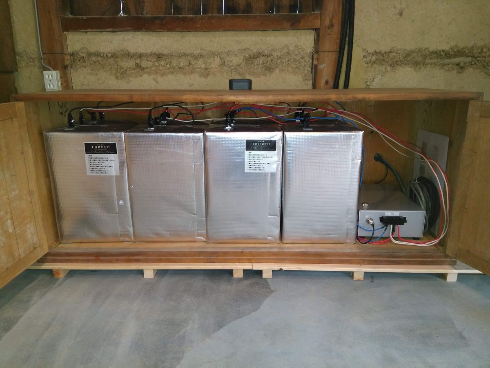
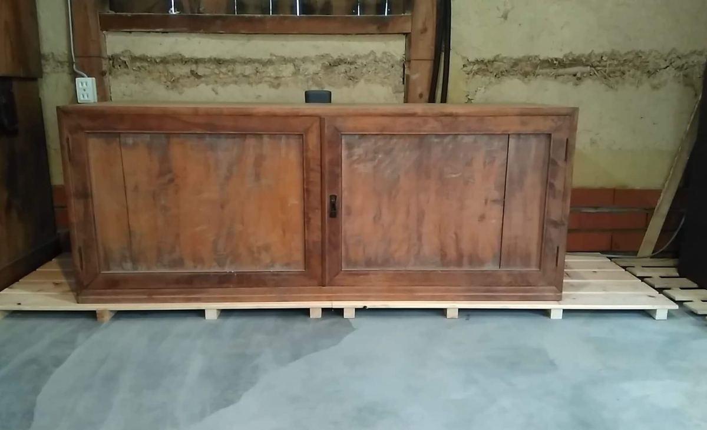
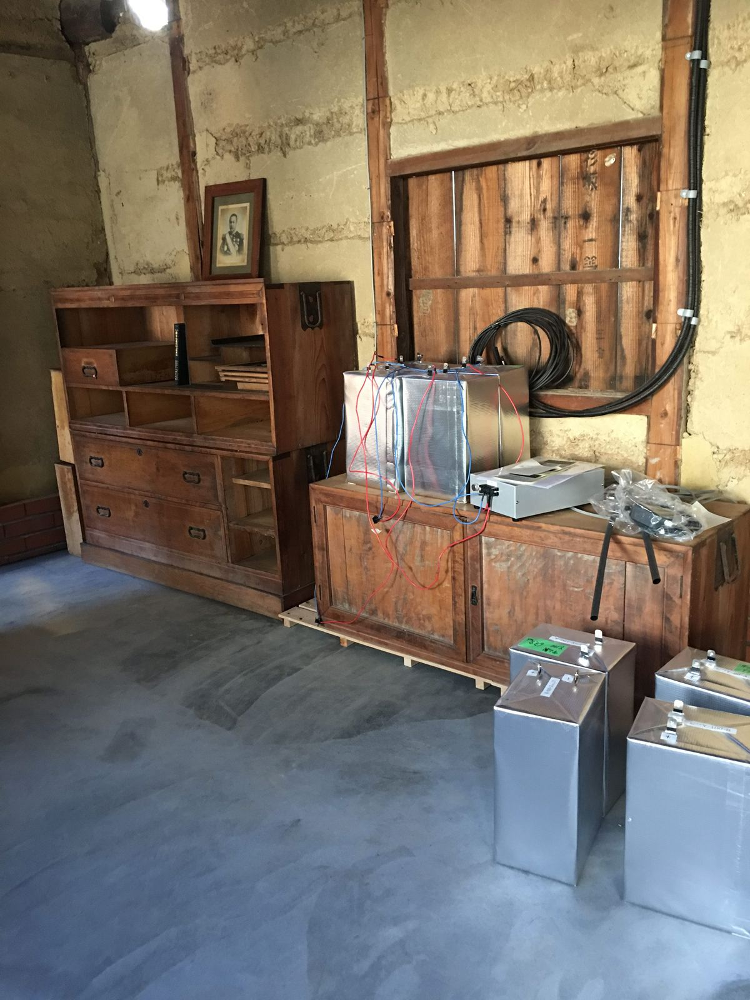
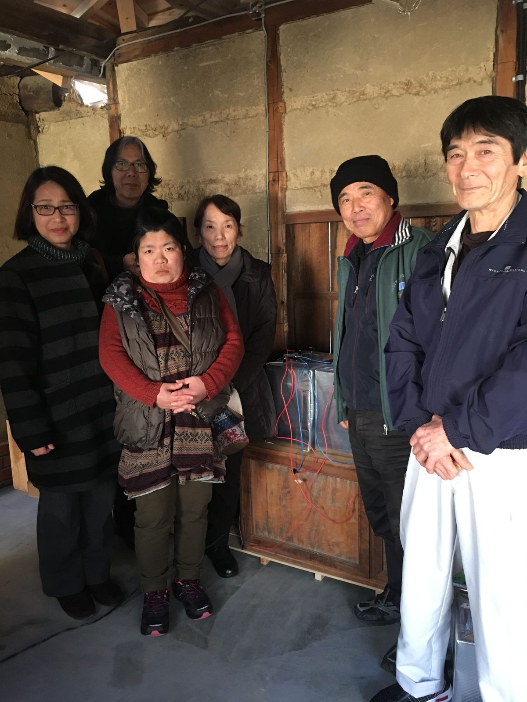

古民家再生の記録
木炭蓄電器「TANDEN」
太陽光パネル＋LED照明＋木炭蓄電器「TANDEN」です。
蓄電池といえば鉛やリチウムが定番。木炭とは？？
暮らしの半分を地元で賄えたら安心だし面白いと思って、汐見はささやかな試みを進めています。井戸、五右衛門風呂、コンポストバイオトイレ。(ちなみに食材は余裕でクリアしています)
電気は有機薄膜太陽光発電と蓄電の技術が進むのを待つつもりでしたが、去年の断水を機に出来る事をしようと思いました。
そうこうして出会ったのが松江高専発の産官学共同プロジェクト、木炭蓄電器「TANDEN」です。
里山で炭を焼いて作り、畑に返せる蓄電池。地球の裏側の鉱山ではなく、汐見の裏山で賄えるかもしれません。エレガントではありませんか。


普段はこの通り
蓄電器は気軽に見られるように長屋門に置きました。日没と共に小さな灯りがともりますので、ご宿泊でなくともお気軽にご覧下さい。

TANDENを 汐見の長屋門 に運び込んだところ。
TANDENの詳細は こちら から。汐見にもリーフレットを置いております。
ご協力下さった皆さま、本当に有難うございました。活用はこれからなので、今後ともどうぞよろしくお願い致します。

里山照らし隊の皆さま、ありがとうございました！
西村 暢子拝
Special Thanks to:
松江工業高等専門学校 名誉教授 高橋信雄様
〃 〃 教授 福間眞澄様
里山照らし隊 隊長 影山邦人様、昇子様
〃 工場長 須山光雄様
弓削商船高等専門学校 助教 森耕太郎様
上島町商工会弓削生名支所 経営指導員 中林宏徳様
左官 岩上勝美様
ナカサカ電機 社長 中坂富雄様
村上工務店 村上潤様